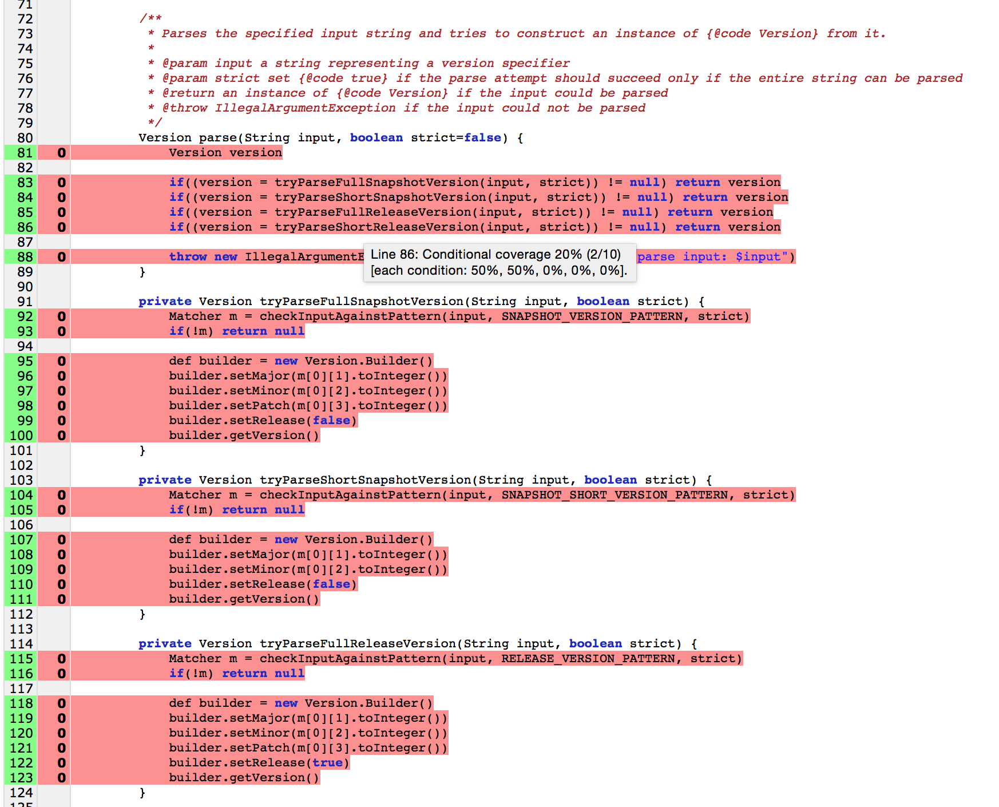
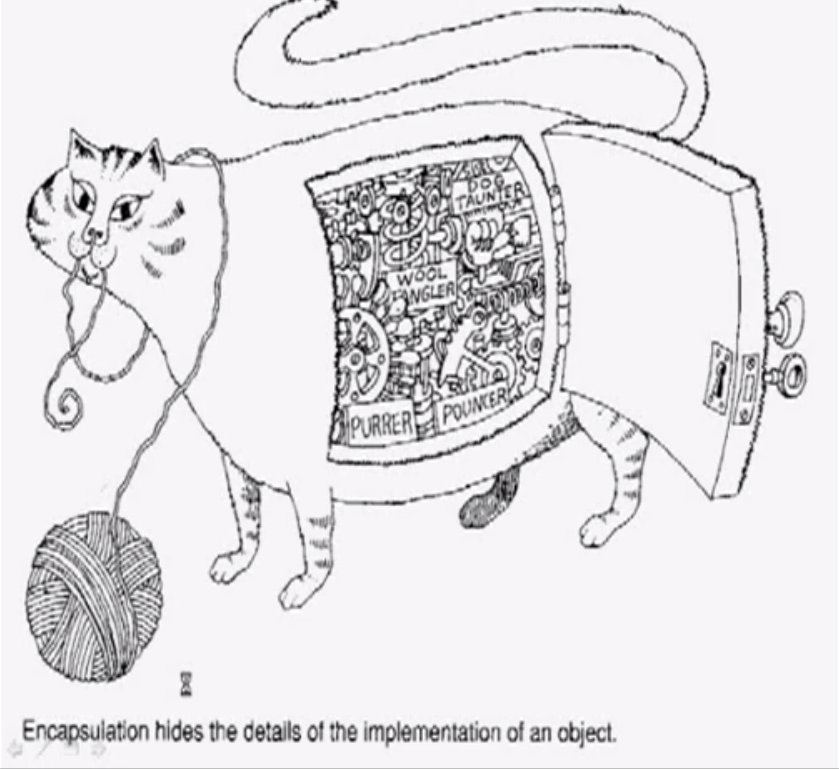

class: center, middle # Service Objects as # Wheelhorses in Rails Apps Ihor Kroosh --- # Problems Typical Rails App's problems are: 1. Fat Models <center><center> --- # Problems Typical Rails App's problems are: 2. Fat Controllers <center></center> --- # Problems Typical Rails App's problems are: 3. Low test coverage :'( <center></center> --- # How to handle this situations - Stop write a code <center></center> --- # How to handle this situations - Continue write code in this way and weep bitterly <center></center> --- class: center, middle # START WRITING SERVICE OBJECT! --- # What is service object? So, **Service Object** is an object, that perform just **one** operation. It can consist of different methods, but it always seems to be **atomic** for the programmer who wants to use it. ```ruby # app/services/accept_invite.rb class AcceptInvite def perform(invite, user) invite.accept!(user) UserMailer.invite_accepted(invite).deliver end end ``` --- # Why is it good? **it REUSABLE** Imagine you don't have a creator - service object, but you need to create objects in this way in several places in the code. You can do it as a callback in model, but it cause high connectivity of this components and the model will be much more bigger and ambiguous. <center></center> --- # Why is it good? **it REUSABLE** For instance, if your object creation depends on another objects ```ruby class GoalGoodieCreator attr_reader :goal_goodie def initialize(goal_goodie_params) @goal_goodie = GoalGoodie.new(goal_goodie_params) end def perform Ability.new(Thread.current[:current_user]).authorize!(:create, goal_goodie) return unless goal_goodie.valid? if User.find(goal_goodie[:user_id]).brand goal_goodie.save else raise CanCan::AccessDenied.new("User can't create goal goodie without selected brand", :create, BankAccount) end end end ``` --- # Why is it good? **it ENCAPSULATES ALL LOGIC** <center></center> --- # Why is it good? **it ENCAPSULATES ALL LOGIC** Remember our AcceptInvite service ```ruby # app/services/accept_invite.rb class AcceptInvite def perform(invite_token, user_id) invite = Invite.find_by_token(invite_token) user = User.find(user_id) invite.accept!(user) UserMailer.invite_accepted(invite).deliver end end ``` --- # Why is it good? **it ENCAPSULATES ALL LOGIC** Then we can use it in controller: ```ruby class InviteController < ApplicationController def accept if AcceptInvite.call(params[:token], current_user.id) redirect_to invite.item, notice: "Welcome!" else redirect_to '/', alert: "Oopsy!" end end end ``` --- # Why is it good? **it ENCAPSULATES ALL LOGIC** ... or in rake task: ```ruby namespace :invites do desc 'Invite all users' task invite_users: :environment do |t, args| AcceptInvite.call(args[:invite_token], args[:user_id]) end end ``` --- # Why is it good? **it ENCAPSULATES ALL LOGIC** ... or in worker: ```ruby class InviterWorker include Sidekiq::Worker sidekiq_options queue: :inviter_worker, retry: 3 def perform(invite_token, user_id) AcceptInvite.call(invite_token, user_id) end end ``` --- # Why is it good? **it ENCAPSULATES ALL LOGIC** Also it allows us not to use callbacks in models in order to avoid unexpected behavoiur. <center></center> --- # Why is it good? **it EASY TESTABLE** You don't need to worry about initializing whole app, to test routes and permissions. You just put some INPUT and expect some OUTPUT or INFLUENCE. Common test example: ```ruby describe ServiceObjectName do subject { described_class.new(params).perform } let(params) { ... } context 'context1' do it { is_expected.to ... } end context 'context2' do it { is_expected.to ... } end end ``` --- # Why is it good? **it EASY TESTABLE** Good way is to test all complicated logic cases in service object. In controllers/models/rake tasks/workers we just test success and fail cases. --- # Ways to write service objects I like two ways to write Service Objects 1. Using explicit creation of objects using `new` 2. Using implicit creation with module `Service` --- # Ways to write service objects Using explicit creation of objects using `new` ```ruby class ServiceObjectName attr_reader :param1, :param2 def initialize(param1, param2) @param1 = param1 @param2 = param2 end def perform … end end ``` --- # Ways to write service objects Using implicit creation with module `Service` ```ruby module Service included do def self.call(*args) new(*args).call end end end class AnotherServiceObjectName include Service attr_reader :param1, :param2 def initialize(param1, param2) ... end def call ... end end ``` --- # Errors handling <center><img src="src/images/13.png" alt="Continue write code in this way and weep bitterly" style="width:500px;"></center> --- # Errors handling To my mind, it's good practice to create custom exception for every Service Object if it does very important work like doing payments etc. We can put errors in `attr_reader :errors` and then raise this exception if errors is not empty. ```ruby class ServiceObject attr_accessor :errors class Error < RuntimeError; end ... end ``` --- # Errors handling Than it's easy to test in specs. ```ruby describe ServiceObject do context 'with invalid params' do let(:assertion) { 'bad-token' } it 'returns error' do expect do described_class.new(assertion).perform! end.to raise_error ServiceObject::Error, 'Wrong any field' end end end ``` --- # Errors handling But for simple service objects it's good to use next practice. Let's look at `PasswordUpdater` example ```ruby class PasswordUpdater attr_reader :errors def initialize(user_id, passwords_hash) @user = User.find(user_id) @errors = {} %i[password password_confirmation current_password].each do |variable| instance_variable_set("@#{variable}", passwords_hash[variable]) end end def perform check_current_password && check_password_verification && update_password end private ... end ``` --- # Errors handling We split our perform method on valuable parts and if one of them returns `false` we stop executing. Service `.pefrom` methods returns either `true` or `false`, and all errors we can find in `.errors` attr_reader. ```ruby service = PasswordUpdater.new(1, params) service.perform handle(service.errors) ``` --- # Another examples Service DB-Querie ```ruby class PriceAccumulator def perform! ActiveRecord::Base.connection.execute(query) .to_a .map do |h| { amount: h['amount'], user_id: h['user_id'].to_i, brand_id: h['brand_id'].to_i } end end private def query <<-SQLCODE SELECT SUM(a.col_1) - SUM(a.col_2) AS amount, a.user_id as user_id, a.brand_id as brand_id FROM a GROUP BY a.user_id, b.brand_id; SQLCODE end end ``` --- # Another examples Provider's authentication [Doorkeeper Grant Assertion](https://github.com/doorkeeper-gem/doorkeeper-grants_assertion) ```ruby resource_owner_from_assertion do begin provider, token = params[:assertion].split(':') case provider when 'facebook' FacebookAuthenticator.new(token).perform! when 'google' GoogleAuthenticator.new(token).perform! end rescue FacebookAuthenticator::Error, GoogleAuthenticator::Error nil end end ``` --- # Another examples Provider's authentication ```ruby class FacebookAuthenticator attr_accessor :token, :conn, :user_info, :avatar_url, :user, :errors class Error < RuntimeError; end def initialize(token) @token = token @conn = Faraday.new(url: 'https://graph.facebook.com') @errors = [] end def perform! load_user_info load_avatar raise(Error, 'Wrong Facebook access token') if errors.length > 0 raise(Error, 'Wrong Facebook id') if user && !user.facebook_id.empty? && user.facebook_id != user_info[:id] user ? update_user! : create_user! end private ... end ``` --- # Thanx :) <center></center>